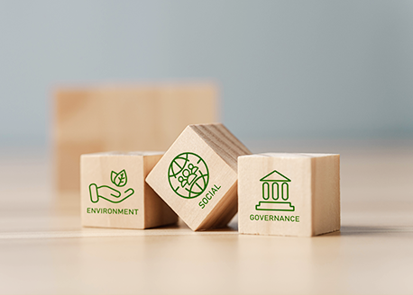

친환경 활동 실천
-

음성공장 태양열발전
음성공장 상부 유휴부지를 활용하여 신재생에너지를 생산하여 가스(LNG)를 대체하여 사용하고 있습니다.
-

친환경패키징 확대
식품제조 시 사용되는 용기를 탄소중립형 포장재, 대체 플라스틱 적용을 확대하고 있습니다.
-

대안육제품 개발
제품 제조 시 원료육 대신 식물성 원료를 사용하여 가축사육 시 발생되는 메탄가스 및 물과 사료의 사용량을 줄여 지속가능한 지구환경에 이바지 하고자 합니다.
-

(협력회사)친환경 경영 독려
2021년부터 (물류 등)협력회사 입찰평가 시 ESG경영 우수 실천 협력사 대상 가점 부여를 통해 ESG 영향력 전파에 앞장서고 있습니다.